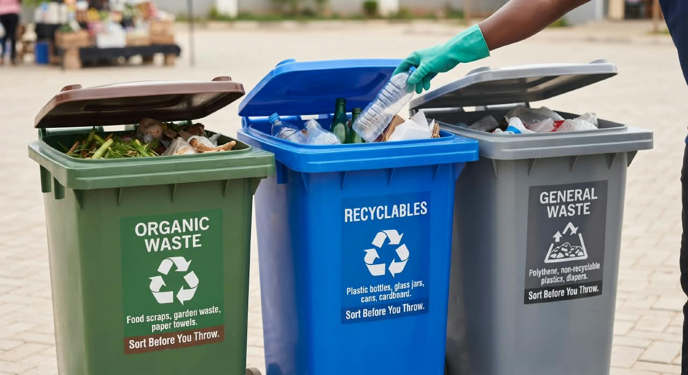

Market Cleaning
Effective waste management in communities blends recycling, waste reduction, and public participation.
Modern methods move beyond landfilling toward smart, decentralized, and sustainable systems.
Welcome to Community WasteLink

Join your neighbours. Bring gloves, we provide bags.
Always remember that clealiness is not only healthy but also comfotable, a clean environment means comfortable working and resting environment.
If you cannot do it, employ a willing party. Let's fight unnecessary flooding and diseases. Let our businesses thrive.
Bins

Power of Community-Led Initiatives|
4R concept (reduce, reuse, recycle, recover) drives cleaner, greener, and more economic outcomes.
Several waste materials can be used for other important things and can be monetized too.